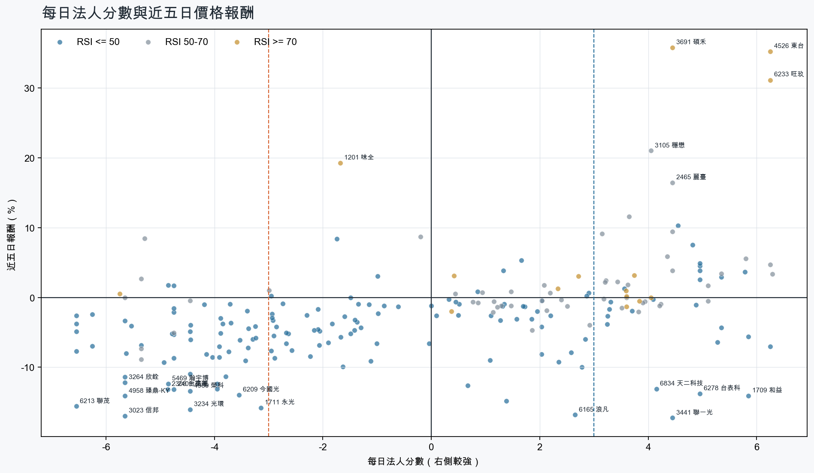
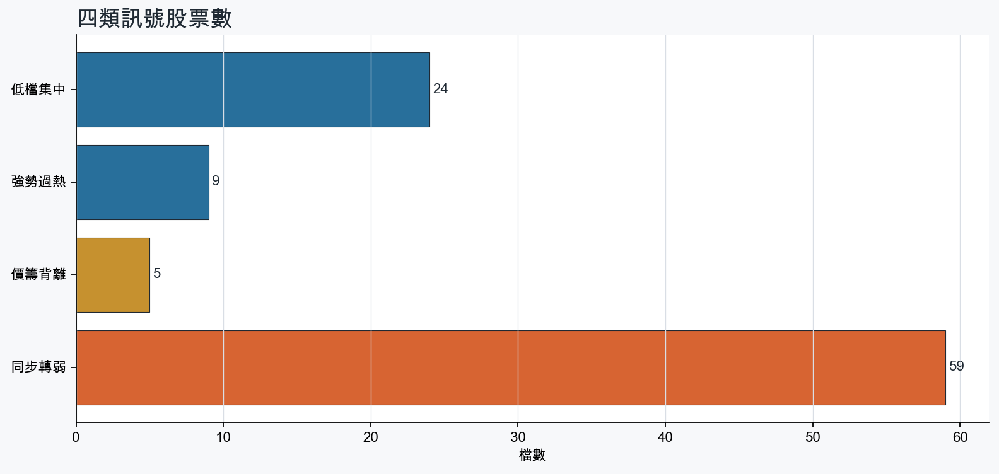
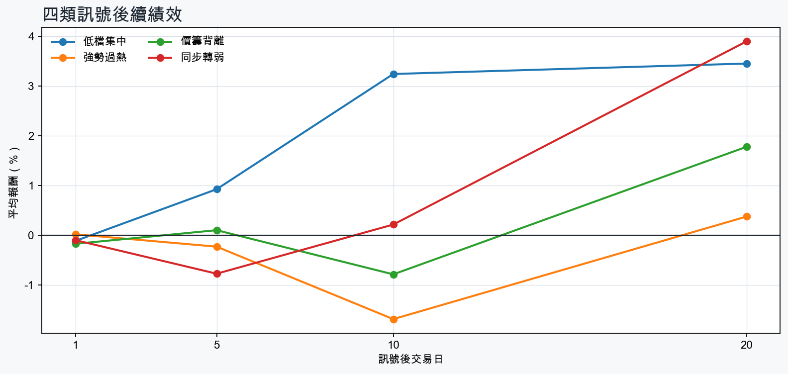

市場情緒偏空
近5日法人合計-6,505,269 張
篩選池上漲比例25.0%
籌碼好 / RSI低15 檔
籌碼差 / 價跌15 檔



EPS × PE VALUATION
法人常用的相對估值
顯示保守、基準與樂觀估值帶，不把單一數字包裝成精準目標價。
最新累計 EPS 依季數年化 × 同產業有效 P/E 的 Q25／中位數／Q75。排除本公司、非正 P/E，並以 1.5×IQR 排除離群值。估值帶是公開資料篩選值，不是法人目標價；未使用分析師預估 EPS。
MOOD × MONEY
情緒與籌碼雷達
熱度代表被討論程度；情緒分與法人方向分開計算。熱門不等於適合追價，樣本不足也不硬判多空。
| 股票 | 情緒 | 討論熱度 | 情緒 × 籌碼 | 情緒 × 基本面 |
|---|---|---|---|---|
| 2409 友達同步轉弱 | 情緒低迷 -36.9信心 100 | 1004 篇 / 527 留言 / 3 則新聞 | 情籌雙弱法人分 -4.8 | 基本面與情緒分歧基本面分 -0.6 |
| 2303 聯電同步轉弱 | 中性分歧 +6.2信心 100 | 973 篇 / 431 留言 / 3 則新聞 | 高熱分歧法人分 -4.0 | 基本面與情緒分歧基本面分 +3.6 |
| 3045 台灣大強勢過熱 | 偏空 -33.3信心 85 | 861 篇 / 214 留言 / 1 則新聞 | 法人布局、市場悲觀法人分 +4.0 | 基本面佳、情緒悲觀基本面分 +1.4 |
| 2412 中華電強勢過熱 | 情緒高漲 +35.2信心 71 | 661 篇 / 47 留言 / 3 則新聞 | 情籌共振法人分 +3.6 | 基本面與情緒共振基本面分 +2.0 |
| 3081 聯亞價籌背離 | 情緒高漲 +44.8信心 80 | 632 篇 / 33 留言 / 3 則新聞 | 熱門但法人撤退法人分 -4.8 | 基本面與情緒共振基本面分 +3.6 |
| 1569 濱川價籌背離 | 偏多 +21.5信心 34 | 441 篇 / 6 留言 / 1 則新聞 | 熱門但法人撤退法人分 -5.3 | 基本面與情緒分歧基本面分 +0.7 |
| 2308 台達電同步轉弱 | 偏空 -29.7信心 30 | 360 篇 / 0 留言 / 3 則新聞 | 情籌雙弱法人分 -4.9 | 基本面佳、情緒悲觀基本面分 +3.6 |
| 4915 致伸同步轉弱 | 偏多 +29.7信心 30 | 360 篇 / 0 留言 / 3 則新聞 | 熱門但法人撤退法人分 -4.5 | 基本面與情緒共振基本面分 +2.0 |
| 5469 瀚宇博同步轉弱 | 偏多 +29.7信心 30 | 360 篇 / 0 留言 / 3 則新聞 | 熱門但法人撤退法人分 -4.8 | 基本面與情緒共振基本面分 +2.0 |
| 5426 振發價籌背離 | 偏多 +29.7信心 30 | 360 篇 / 0 留言 / 3 則新聞 | 熱門但法人撤退法人分 -5.3 | 基本面與情緒共振基本面分 +2.0 |
| 3374 精材價籌背離 | 中性分歧 +0.0信心 30 | 360 篇 / 0 留言 / 3 則新聞 | 情籌混合法人分 -4.8 | 基本面與情緒分歧基本面分 +2.0 |
| 3691 碩禾強勢過熱 | 中性分歧 +0.0信心 30 | 360 篇 / 0 留言 / 3 則新聞 | 情籌混合法人分 +4.5 | 基本面與情緒分歧基本面分 +2.0 |
01
籌碼好 / RSI低
優先研究基本面；法人續買且價格止穩時，才適合分批觀察。
| 股票 / 確認狀態 | 每日法人分 | 浦男式近似 | 法人加速度 | RSI / 相對強弱 | 量價確認 | 融資融券 | 每週集保確認 | 基本面 | EPS × 同業 P/E 估值 | 情緒 / 情籌 | 近期消息 | 論壇討論 |
|---|---|---|---|---|---|---|---|---|---|---|---|---|
| 4916 事欣科可研究 · 100 分籌碼與價格確認，可列研究清單 | +5.3法人 +4,244 張 / 4 天 | 命中 · 100站上月線；中期均線偏多；法人籌碼偏多 | +2,222 張近3日 +3,100 / 連續 +1 日 | 49.2相對大盤 +5.8% | 量比 0.98確認分 +6.0價格、量能與籌碼未見明顯弱項 | -%融資 - 張 / 融券 - 張 | +5.92 pp1000張 +4.32 pp | 單月營收年增 +70.3%；累計營收年增 +63.0%仍需觀察下一期財報延續性來源：公開資訊觀測站 | 不適用最新財報缺少可年化 EPS | 中性分歧 +0.0熱度 31 / 信心 20情籌混合 | 國防航太低軌衛星旺，事欣科明年營收衝歷史次高- 新聞MoneyDJ · 10/16【10:14 即時新聞】事欣科(4916)股價走強，市場聚焦軍工與低軌衛星動能CMoney投資網誌 · 10/29 | 近期沒有明確提及本股的論壇樣本 |
| 3293 鈊象可研究 · 93 分籌碼與價格確認，可列研究清單 | +3.6法人 +1,770 張 / 4 天 | 接近 · 90站上月線；中期均線偏多；法人籌碼偏多；留意量能異常 | +704 張近3日 +1,563 / 連續 +3 日 | 50.0相對大盤 +4.2% | 量比 0.44確認分 +4.2成交量不足 | -1.8%融資 -35 張 / 融券 +0 張 | +1.63 pp1000張 +1.18 pp | 單月營收年增 +25.3%；累計營收年增 +18.9%仍需觀察下一期財報延續性來源：公開資訊觀測站 | 不適用最新財報缺少可年化 EPS | 中性分歧 +0.0熱度 36 / 信心 30情籌混合 | 3293 鈊象- 美國市場，董事長李柯柱表示，目前看不到市場的天花板。 - 股市爆料同學會CMoney · 11/023293 鈊象 - 鈊象交易.1102 外資買賣+73張【連買2日】 投信買賣+... - 股市爆料同學會CMoney · 11/02 | 近期沒有明確提及本股的論壇樣本 |
| 6278 台表科等待確認 · 78 分籌碼有訊號，但價格尚未確認 | +5.0法人 +4,807 張 / 3 天 | 接近 · 65中期均線偏多；法人籌碼偏多；買超具延續性；留意未站月線、法人買盤未加速 | -3,527 張近3日 +1,648 / 連續 -1 日 | 43.6相對大盤 +22.0% | 量比 0.52確認分 -0.8收盤跌破20日線；成交量不足；法人買盤減速 | -%融資 - 張 / 融券 - 張 | +9.54 pp1000張 +8.80 pp | 單月營收年增 +15.9%；累計營收年增 +6.5%仍需觀察下一期財報延續性來源：公開資訊觀測站 | 不適用最新財報缺少可年化 EPS | 偏多 +19.8熱度 31 / 信心 20情籌混合 | 台表科財報公布倒數 光通訊訂單獲利挹注受關注UDN · 11/0213檔三好股突圍悍將 台表科、聯茂等近20日三大法人搶買 | 市場焦點 | 證券經濟日報 · 10/26 | 近期沒有明確提及本股的論壇樣本 |
| 3324 雙鴻可研究 · 86 分籌碼與價格確認，可列研究清單 | +5.0法人 +1,319 張 / 3 天 | 接近 · 75中期均線偏多；法人籌碼偏多；法人買盤加速；留意未站月線、相對強度普通 | +239 張近3日 +1,170 / 連續 +1 日 | 38.4相對大盤 -2.2% | 量比 1.42確認分 +1.9收盤跌破20日線 | +1.9%融資 +104 張 / 融券 +3 張 | -1.17 pp1000張 +4.77 pp | 單月營收年增 +23.2%；累計營收年增 +72.4%仍需觀察下一期財報延續性來源：公開資訊觀測站 | 不適用最新財報缺少可年化 EPS | 中性分歧 +0.0熱度 36 / 信心 30情籌混合 | 三大法人買賣超 – 外資買超(2317)鴻海、(3324)雙鴻，投信買超(2330)台積電、(2454)聯發科，法人合計賣超526.92億元永豐金證券 · 11/02【11:42 即時新聞】雙鴻(3324) 股價走強，盤面聚焦AI液冷散熱題材CMoney投資網誌 · 11/02 | 近期沒有明確提及本股的論壇樣本 |
| 9939 宏全等待確認 · 84 分籌碼有訊號，但價格尚未確認 | +5.3法人 +5,053 張 / 4 天 | 接近 · 68法人籌碼偏多；法人買盤加速；買超具延續性；留意未站月線、中期均線未翻多 | +3,345 張近3日 +4,250 / 連續 +3 日 | 38.7相對大盤 +3.9% | 量比 1.52確認分 +2.0收盤跌破20日線；20日線低於60日線 | -%融資 - 張 / 融券 - 張 | +0.36 pp1000張 +0.15 pp | 單月營收年增 +3.6%；累計營收年增 +3.3%仍需觀察下一期財報延續性來源：公開資訊觀測站 | 不適用最新財報缺少可年化 EPS | 樣本不足 +0.0熱度 22 / 信心 10情緒樣本不足 | 《新聞裡的產業課》宏全(9939-TW)成本上漲是助力還是壓力？拆解原物料、折舊與稼動率鉅亨網 · 11/01 | 近期沒有明確提及本股的論壇樣本 |
| 2451 創見等待確認 · 78 分籌碼有訊號，但價格尚未確認 | +5.8法人 +4,240 張 / 4 天 | 接近 · 78站上月線；法人籌碼偏多；買超具延續性；留意中期均線未翻多、法人買盤未加速 | -4,643 張近3日 +72 / 連續 +1 日 | 49.0相對大盤 +4.8% | 量比 0.89確認分 -0.620日線低於60日線；法人買盤減速 | -%融資 - 張 / 融券 - 張 | +0.59 pp1000張 +1.40 pp | 單月營收年增 +290.4%；累計營收年增 +370.0%仍需觀察下一期財報延續性來源：公開資訊觀測站 | 不適用最新財報缺少可年化 EPS | 偏多 +29.7熱度 36 / 信心 30情籌共振 | 《投信買超10-10》創見(110)、聯鈞(108)、矽格(105)富聯網 · 11/02《一週投信買超11-10》創見(227)、世芯KY(208)、允強(198)富聯網 · 11/02 | 近期沒有明確提及本股的論壇樣本 |
| 2393 億光等待確認 · 69 分籌碼有訊號，但價格尚未確認 | +3.7法人 +2,046 張 / 4 天 | 接近 · 70中期均線偏多；法人籌碼偏多；買超具延續性；留意未站月線、法人買盤未加速 | -2,278 張近3日 +215 / 連續 +2 日 | 38.8相對大盤 +9.4% | 量比 0.79確認分 -0.2收盤跌破20日線；法人買盤減速 | -%融資 - 張 / 融券 - 張 | +1.24 pp1000張 +0.70 pp | 單月營收年增 +18.6%；累計營收年增 +7.6%仍需觀察下一期財報延續性來源：公開資訊觀測站 | 不適用最新財報缺少可年化 EPS | 樣本不足 +0.0熱度 0 / 信心 0情緒樣本不足 | 近期沒有通過股票語境篩選的新聞 | 近期沒有明確提及本股的論壇樣本 |
| 6834 天二科技等待確認 · 77 分籌碼有訊號，但價格尚未確認 | +4.2法人 +1,471 張 / 3 天 | 接近 · 70中期均線偏多；法人籌碼偏多；法人買盤加速；留意未站月線、量能異常 | +2,555 張近3日 +884 / 連續 -1 日 | 33.3相對大盤 +3.5% | 量比 0.22確認分 +2.0收盤跌破20日線；成交量不足 | -%融資 - 張 / 融券 - 張 | -1.82 pp1000張 -4.16 pp | 單月營收年增 +132.4%；累計營收年增 +61.2%仍需觀察下一期財報延續性來源：公開資訊觀測站 | 不適用最新財報缺少可年化 EPS | 偏空 -19.8熱度 31 / 信心 20情籌混合 | 天二科技9月/前3季營收續新猷，估全年AI占比達15%MoneyDJ · 10/12天二科技從虧損暴賺變身黑馬，為何散戶暴增近2倍瘋搶，千張大戶卻在偷偷大落跑？理財周刊 · 09/11 | 近期沒有明確提及本股的論壇樣本 |
| 5351 鈺創等待確認 · 63 分籌碼有訊號，但價格尚未確認 | +5.0法人 +3,779 張 / 3 天 | 接近 · 64法人籌碼偏多；買超具延續性；相對大盤偏強；留意未站月線、中期均線未翻多 | -5,191 張近3日 -1,101 / 連續 -1 日 | 41.4相對大盤 +1.7% | 量比 0.91確認分 -2.6收盤跌破20日線；20日線低於60日線；法人買盤減速 | -0.3%融資 -41 張 / 融券 -2 張 | +0.75 pp1000張 -0.70 pp | 單月營收年增 +500.3%；累計營收年增 +490.8%仍需觀察下一期財報延續性來源：公開資訊觀測站 | 不適用最新財報缺少可年化 EPS | 中性分歧 +0.0熱度 31 / 信心 20情籌混合 | 5351 鈺創- 長鑫存儲~~~催化記憶體發展戰略挪移- 股市爆料同學會CMoney · 10/14【13:24 即時新聞】鈺創(5351)盤中走強站上114元，記憶體族群續列多方焦點CMoney投資網誌 · 10/28 | 近期沒有明確提及本股的論壇樣本 |
| 3211 順達等待確認 · 69 分籌碼有訊號，但價格尚未確認 | +5.8法人 +1,775 張 / 4 天 | 未命中 · 51法人籌碼偏多；法人買盤加速；買超具延續性；留意未站月線、中期均線未翻多 | +1,103 張近3日 +1,126 / 連續 +2 日 | 17.4相對大盤 -17.1% | 量比 1.17確認分 -1.0收盤跌破20日線；20日線低於60日線；近20日弱於大盤 | -1.0%融資 -71 張 / 融券 -8 張 | -2.13 pp1000張 -0.15 pp | 累計營收年增 +13.9%；2026 Q3 累計 EPS 5.73；2026 Q3 累計營益率 9.9%單月營收年增 -34.1%來源：公開資訊觀測站 | 基準 NT$ 118.5估值帶 88.32–161.9現價 302.0 · 高於估值帶 · 距基準 -60.8%2026 Q3 累計 EPS 5.73 → 年化 7.64電腦及週邊同業 P/E 11.56／15.51／21.19 · n=78 · 信心較高以 Q3 累計 EPS 年化，不等同分析師全年預估來源：TWSE／TPEx 每日本益比 | 中性分歧 +9.9熱度 36 / 信心 30情籌混合 | 3211 順達 - 又洗出一個主力兆豐，要開心 外資連續兩天買超 - 股市爆料同學會CMoney · 11/02焦點股》順達：電池模組走弱 一度跌停自由財經 · 10/30 | 近期沒有明確提及本股的論壇樣本 |
| 9941 裕融等待確認 · 67 分籌碼有訊號，但價格尚未確認 | +3.3法人 +1,563 張 / 5 天 | 接近 · 62法人籌碼偏多；法人買盤加速；買超具延續性；留意未站月線、中期均線未翻多 | +753 張近3日 +1,262 / 連續 +7 日 | 48.0相對大盤 +5.3% | 量比 0.64確認分 +0.6收盤跌破20日線；20日線低於60日線；成交量不足 | -%融資 - 張 / 融券 - 張 | -0.30 pp1000張 -0.20 pp | 單月營收年增 +5.1%累計營收年增 -0.6%來源：公開資訊觀測站 | 不適用最新財報缺少可年化 EPS | 樣本不足 +0.0熱度 0 / 信心 0情緒樣本不足 | 近期沒有通過股票語境篩選的新聞 | 近期沒有明確提及本股的論壇樣本 |
| 3624 光頡等待確認 · 70 分籌碼有訊號，但價格尚未確認 | +6.2法人 +3,372 張 / 5 天 | 未命中 · 55中期均線偏多；法人籌碼偏多；法人買盤加速；留意未站月線、明顯弱於大盤 | +2,569 張近3日 +1,699 / 連續 +5 日 | 24.1相對大盤 -10.6% | 量比 0.32確認分 -0.2收盤跌破20日線；近20日弱於大盤；成交量不足 | -7.2%融資 -634 張 / 融券 -124 張 | -7.18 pp1000張 -6.96 pp | 單月營收年增 +67.4%；累計營收年增 +34.8%仍需觀察下一期財報延續性來源：公開資訊觀測站 | 不適用最新財報缺少可年化 EPS | 偏多 +29.7熱度 36 / 信心 30情籌共振 | 【光頡法說會重點內容備忘錄】未來展望趨勢 20261007富果直送 · 10/07光頡(3624)交期排到2027年下半年！預算達成率僅84%的一年，AI與漲價怎麼讓2026年翻盤？鉅亨網 · 10/19 | 近期沒有明確提及本股的論壇樣本 |
| 2049 上銀等待確認 · 57 分籌碼有訊號，但價格尚未確認 | +4.8法人 +3,424 張 / 3 天 | 接近 · 59法人籌碼偏多；買超具延續性；相對大盤偏強；留意未站月線、中期均線未翻多 | -3,218 張近3日 -95 / 連續 -2 日 | 43.8相對大盤 +2.3% | 量比 0.79確認分 -3.2收盤跌破20日線；20日線低於60日線；法人買盤減速 | -%融資 - 張 / 融券 - 張 | -0.82 pp1000張 +0.10 pp | 單月營收年增 +30.1%；累計營收年增 +23.9%仍需觀察下一期財報延續性來源：公開資訊觀測站 | 不適用最新財報缺少可年化 EPS | 偏多 +29.7熱度 36 / 信心 30情籌共振 | 上銀訂單能見度高- 日報工商時報 · 11/02權證市場焦點－上銀 訂單能見度高中時新聞網 · 11/02 | 近期沒有明確提及本股的論壇樣本 |
| 1709 和益等待確認 · 69 分籌碼有訊號，但價格尚未確認 | +5.8法人 +5,451 張 / 4 天 | 未命中 · 51中期均線偏多；法人籌碼偏多；法人買盤加速；留意未站月線、明顯弱於大盤 | +1,183 張近3日 +2,986 / 連續 +3 日 | 33.8相對大盤 -4.4% | 量比 0.48確認分 +0.1收盤跌破20日線；近20日弱於大盤；成交量不足 | -%融資 - 張 / 融券 - 張 | -5.37 pp1000張 -4.62 pp | 單月營收年增 +6.6%；累計營收年增 +20.3%仍需觀察下一期財報延續性來源：公開資訊觀測站 | 不適用最新財報缺少可年化 EPS | 樣本不足 +0.0熱度 22 / 信心 10情緒樣本不足 | 面板轉型先進封裝！這檔「抗翹曲專利」飆漲停！和益拉回是買點？億元教授：半導體核心材料基期超低！優分析UAnalyze · 10/31 | 近期沒有明確提及本股的論壇樣本 |
| 3313 斐成等待確認 · 56 分籌碼有訊號，但價格尚未確認 | +4.9法人 +1,454 張 / 5 天 | 未命中 · 39法人籌碼偏多；買超具延續性；相對大盤偏強；留意未站月線、中期均線未翻多 | -1,405 張近3日 +24 / 連續 +5 日 | 27.0相對大盤 +1.0% | 量比 0.55確認分 -3.5收盤跌破20日線；20日線低於60日線；成交量不足；法人買盤減速；流動性偏低 | -19.8%融資 -100 張 / 融券 +0 張 | +0.00 pp1000張 +0.00 pp | 單月營收年增 +6.5%；累計營收年增 +223.9%仍需觀察下一期財報延續性來源：公開資訊觀測站 | 不適用最新財報缺少可年化 EPS | 樣本不足 +0.0熱度 0 / 信心 0情緒樣本不足 | 近期沒有通過股票語境篩選的新聞 | 近期沒有明確提及本股的論壇樣本 |
02
籌碼好 / RSI高
趨勢強但不追價，等待量縮、RSI降溫或回測支撐。
| 股票 / 確認狀態 | 每日法人分 | 浦男式近似 | 法人加速度 | RSI / 相對強弱 | 量價確認 | 融資融券 | 每週集保確認 | 基本面 | EPS × 同業 P/E 估值 | 情緒 / 情籌 | 近期消息 | 論壇討論 |
|---|---|---|---|---|---|---|---|---|---|---|---|---|
| 3691 碩禾等待拉回 · 100 分等拉回，不追價 | +4.5法人 +1,462 張 / 3 天 | 命中 · 96站上月線；中期均線偏多；法人籌碼偏多；留意動能位置非最佳 | +1,227 張近3日 +1,408 / 連續 +2 日 | 77.1相對大盤 +35.2% | 量比 0.99確認分 +5.9融資單日增幅偏高 | +11.8%融資 +604 張 / 融券 +205 張 | +2.03 pp1000張 +4.17 pp | 單月營收年增 +64.2%；累計營收年增 +112.3%仍需觀察下一期財報延續性來源：公開資訊觀測站 | 不適用最新財報缺少可年化 EPS | 中性分歧 +0.0熱度 36 / 信心 30情籌混合 | 《光電股》碩禾9月EPS0.42元 由虧轉盈富聯網 · 11/02盈餘：碩禾(3691)股價遭警示，自結9月歸屬母公司淨利3900萬元，EPS 0.42元富聯網 · 11/02 | 近期沒有明確提及本股的論壇樣本 |
| 6233 旺玖等待拉回 · 100 分等拉回，不追價 | +6.2法人 +1,574 張 / 5 天 | 接近 · 81站上月線；中期均線偏多；法人籌碼偏多；留意量能尚未確認、RSI過熱 | +688 張近3日 +1,083 / 連續 +5 日 | 95.9相對大盤 +55.8% | 量比 2.64確認分 +6.3價格、量能與籌碼未見明顯弱項 | -5.7%融資 -191 張 / 融券 +85 張 | +4.56 pp1000張 +5.50 pp | 單月營收年增 +19.8%；累計營收年增 +7.5%仍需觀察下一期財報延續性來源：公開資訊觀測站 | 不適用最新財報缺少可年化 EPS | 偏多 +29.7熱度 36 / 信心 30情籌共振 | 旺玖買盤強攻亮燈漲停！AIoT、車用產品量產進度成後市焦點自由財經 · 11/02【09:12 即時新聞】旺玖(6233)亮燈漲停，IC設計族群續強吸金CMoney投資網誌 · 11/02 | 近期沒有明確提及本股的論壇樣本 |
| 4526 東台等待拉回 · 97 分等拉回，不追價 | +6.2法人 +18,007 張 / 5 天 | 接近 · 78站上月線；中期均線偏多；法人籌碼偏多；留意法人買盤未加速、量能尚未確認 | -20,585 張近3日 +3,896 / 連續 +7 日 | 90.6相對大盤 +67.6% | 量比 0.75確認分 +1.8法人買盤減速 | -%融資 - 張 / 融券 - 張 | +9.72 pp1000張 +9.61 pp | 單月營收年增 +81.0%；累計營收年增 +11.0%仍需觀察下一期財報延續性來源：公開資訊觀測站 | 不適用最新財報缺少可年化 EPS | 偏多 +29.7熱度 36 / 信心 30情籌共振 | 台股3檔「抓去關」新名單 東台明起處置到11／9ETtoday財經雲 · 10/29老牌工具機廠變AI黑馬！東台股價3個月飆近一倍 12年前押寶技術終於發威 | 綜合產業 | 產業經濟日報 · 10/28 | 近期沒有明確提及本股的論壇樣本 |
| 2891 中信金等待拉回 · 98 分等拉回，不追價 | +3.6法人 +41,638 張 / 5 天 | 命中 · 96站上月線；中期均線偏多；法人籌碼偏多；留意動能位置非最佳 | +15,724 張近3日 +32,904 / 連續 +7 日 | 70.3相對大盤 +16.8% | 量比 1.30確認分 +5.5價格、量能與籌碼未見明顯弱項 | -%融資 - 張 / 融券 - 張 | +0.47 pp1000張 +0.54 pp | 單月營收年增 +12.8%；累計營收年增 +33.2%仍需觀察下一期財報延續性來源：公開資訊觀測站 | 不適用最新財報缺少可年化 EPS | 偏多 +29.7熱度 36 / 信心 30情籌共振 | 金融股是最強避風港？彰銀、中信金驚現瘋狂買盤「專家斬釘截鐵：不能無腦買」這幾檔地雷法人正在偷賣- 上市櫃旺得富理財網 · 11/022891 中信金 - 國泰現金股利85萬，本周操作策略為冬眠。累計中信金1155張... - 股市爆料同學會CMoney · 11/02 | 近期沒有明確提及本股的論壇樣本 |
| 4904 遠傳等待拉回 · 97 分等拉回，不追價 | +3.6法人 +7,670 張 / 5 天 | 命中 · 92站上月線；中期均線偏多；法人籌碼偏多；留意動能位置非最佳 | +3,251 張近3日 +6,419 / 連續 +10 日 | 72.2相對大盤 +14.4% | 量比 1.22確認分 +5.6價格、量能與籌碼未見明顯弱項 | -%融資 - 張 / 融券 - 張 | +0.26 pp1000張 +0.33 pp | 單月營收年增 +8.7%；累計營收年增 +11.0%仍需觀察下一期財報延續性來源：公開資訊觀測站 | 不適用最新財報缺少可年化 EPS | 樣本不足 +0.0熱度 0 / 信心 0情緒樣本不足 | 近期沒有通過股票語境篩選的新聞 | 近期沒有明確提及本股的論壇樣本 |
| 2801 彰銀等待拉回 · 97 分等拉回，不追價 | +3.7法人 +29,882 張 / 5 天 | 接近 · 90站上月線；中期均線偏多；法人籌碼偏多；留意RSI過熱 | +6,078 張近3日 +23,327 / 連續 +10 日 | 80.2相對大盤 +18.3% | 量比 1.46確認分 +5.1價格、量能與籌碼未見明顯弱項 | -%融資 - 張 / 融券 - 張 | +0.58 pp1000張 +0.64 pp | 單月營收年增 +12.8%；累計營收年增 +14.2%仍需觀察下一期財報延續性來源：公開資訊觀測站 | 不適用最新財報缺少可年化 EPS | 中性分歧 +0.0熱度 36 / 信心 30情籌混合 | 金融股是最強避風港？彰銀、中信金驚現瘋狂買盤「專家斬釘截鐵：不能無腦買」這幾檔地雷法人正在偷賣- 上市櫃旺得富理財網 · 11/022801 彰銀- 【最新消息】363億元聯貸案簽約，「公股銀行」站上30元創新高！ - 股市爆料同學會CMoney · 10/29 | 近期沒有明確提及本股的論壇樣本 |
| 3045 台灣大等待拉回 · 93 分等拉回，不追價 | +4.0法人 +12,158 張 / 5 天 | 接近 · 86站上月線；中期均線偏多；法人籌碼偏多；留意RSI過熱 | +16 張近3日 +7,764 / 連續 +10 日 | 79.5相對大盤 +15.3% | 量比 1.19確認分 +4.5價格、量能與籌碼未見明顯弱項 | -%融資 - 張 / 融券 - 張 | +0.28 pp1000張 +0.35 pp | 單月營收年增 +10.3%；累計營收年增 +5.4%仍需觀察下一期財報延續性來源：公開資訊觀測站 | 不適用最新財報缺少可年化 EPS | 偏空 -33.3熱度 86 / 信心 85法人布局、市場悲觀 | 電信股王爭霸戰開打？ 台灣大總座林之晨：股價超越中華電僅「時間問題」Yahoo股市 · 10/27 | [標的] 台灣大盤 附停損單 含資訊整理PTT Stock · 10-31 · 214 留言 |
| 5876 上海商銀等待拉回 · 85 分等拉回，不追價 | +3.8法人 +13,375 張 / 5 天 | 命中 · 85站上月線；中期均線偏多；法人籌碼偏多；留意法人買盤未加速、動能位置非最佳 | -5,664 張近3日 +6,456 / 連續 +10 日 | 71.4相對大盤 +18.5% | 量比 1.18確認分 +3.1法人買盤減速 | -%融資 - 張 / 融券 - 張 | +0.36 pp1000張 +0.42 pp | 單月營收年增 +10.7%；累計營收年增 +2.8%仍需觀察下一期財報延續性來源：公開資訊觀測站 | 不適用最新財報缺少可年化 EPS | 樣本不足 +0.0熱度 0 / 信心 0情緒樣本不足 | 近期沒有通過股票語境篩選的新聞 | 近期沒有明確提及本股的論壇樣本 |
| 2412 中華電等待拉回 · 96 分等拉回，不追價 | +3.6法人 +16,210 張 / 5 天 | 接近 · 90站上月線；中期均線偏多；法人籌碼偏多；留意RSI過熱 | +2,957 張近3日 +12,624 / 連續 +10 日 | 86.1相對大盤 +15.9% | 量比 0.91確認分 +5.0價格、量能與籌碼未見明顯弱項 | -%融資 - 張 / 融券 - 張 | +0.49 pp1000張 +0.50 pp | 單月營收年增 +20.9%；累計營收年增 +10.8%仍需觀察下一期財報延續性來源：公開資訊觀測站 | 不適用最新財報缺少可年化 EPS | 情緒高漲 +35.2熱度 66 / 信心 71情籌共振 | 2412 中華電- 影／ AI Agent新賽局簡立峰：全球掀五變革- 股市爆料同學會CMoney · 11/02中華電 股價逆勢創高中時新聞網 · 11/01 | Re: [標的] 2412中華電信爬到高點PTT Stock · 10-30 · 47 留言 |
03
籌碼差 / 股價上漲
可能是事件行情或軋空；沒有籌碼改善前避免追高。
| 股票 / 確認狀態 | 每日法人分 | 浦男式近似 | 法人加速度 | RSI / 相對強弱 | 量價確認 | 融資融券 | 每週集保確認 | 基本面 | EPS × 同業 P/E 估值 | 情緒 / 情籌 | 近期消息 | 論壇討論 |
|---|---|---|---|---|---|---|---|---|---|---|---|---|
| 5426 振發風險警示 · 64 分背離警戒，避免追高 | -5.3法人 -1,417 張 / 1 天 | 接近 · 82站上月線；中期均線偏多；法人買盤加速；留意法人籌碼偏弱、買超延續不足 | +1,867 張近3日 +138 / 連續 +1 日 | 62.9相對大盤 +21.2% | 量比 0.91確認分 +6.5價格、量能與籌碼未見明顯弱項 | -0.4%融資 -17 張 / 融券 -61 張 | -0.89 pp1000張 -0.77 pp | 單月營收年增 +28.1%；累計營收年增 +21.5%仍需觀察下一期財報延續性來源：公開資訊觀測站 | 不適用最新財報缺少可年化 EPS | 偏多 +29.7熱度 36 / 信心 30熱門但法人撤退 | 【10:01 即時新聞】振發(5426)亮燈漲停，AI伺服器機殼題材續吸引買盤CMoney投資網誌 · 11/02【振發法說會重點內容備忘錄】未來展望趨勢 20261021富果直送 · 10/21 | 近期沒有明確提及本股的論壇樣本 |
| 3081 聯亞風險警示 · 20 分背離警戒，避免追高 | -4.8法人 -1,463 張 / 2 天 | 未命中 · 34量價健康；基本面有支撐；流動性足夠；留意未站月線、中期均線未翻多 | -1,078 張近3日 -1,341 / 連續 +1 日 | 32.5相對大盤 -2.9% | 量比 1.05確認分 -3.1收盤跌破20日線；20日線低於60日線；法人買盤減速 | -2.5%融資 -142 張 / 融券 -27 張 | -2.48 pp1000張 -2.62 pp | 單月營收年增 +190.2%；累計營收年增 +136.3%；2026 Q3 累計 EPS 13.88仍需觀察下一期財報延續性來源：公開資訊觀測站 | 基準 NT$ 414.6估值帶 270.4–775.1現價 2,415 · 高於估值帶 · 距基準 -82.8%2026 Q3 累計 EPS 13.88 → 年化 18.51通信網路同業 P/E 14.61／22.40／41.88 · n=61 · 信心較高以 Q3 累計 EPS 年化，不等同分析師全年預估來源：TWSE／TPEx 每日本益比 | 情緒高漲 +44.8熱度 63 / 信心 80熱門但法人撤退 | 〈焦點股〉外資看好矽光放量提高目標價 聯亞黑翻紅強漲4%鉅亨網 · 11/02《通網股》聯亞毛利率衝58.6%！800G、1.6T需求旺、外資喊價4490元旺得富理財網 · 11/02 | [情報] 2323 中環 買聯亞，賣穩懋賺56,761,153元PTT Stock · 10-29 · 21 留言[情報] 2323 中環 買聯亞、新盛力，賣聯亞 賺PTT Stock · 10-30 · 12 留言 |
| 1569 濱川風險警示 · 45 分背離警戒，避免追高 | -5.3法人 -2,923 張 / 1 天 | 接近 · 67站上月線；中期均線偏多；明顯強於大盤；留意法人籌碼偏弱、法人買盤未加速 | -862 張近3日 -1,643 / 連續 -1 日 | 65.2相對大盤 +45.0% | 量比 0.92確認分 +2.5法人買盤減速 | +1.8%融資 +253 張 / 融券 -14 張 | +1.95 pp1000張 +1.32 pp | 單月營收年增 +39.1%累計營收年增 -2.3%來源：公開資訊觀測站 | 不適用最新財報缺少可年化 EPS | 偏多 +21.5熱度 44 / 信心 34熱門但法人撤退 | 《上櫃個股成交量前30名（6-4）》濱川企業(11454)富聯網 · 11/02 | [情報] 1569 濱川 達注意標準9月自結0.6元PTT Stock · 10-29 · 6 留言 |
| 3374 精材風險警示 · 28 分背離警戒，避免追高 | -4.8法人 -3,511 張 / 1 天 | 未命中 · 55中期均線偏多；明顯強於大盤；基本面有支撐；留意未站月線、法人籌碼偏弱 | -2,140 張近3日 -1,878 / 連續 +1 日 | 48.0相對大盤 +9.7% | 量比 0.23確認分 -1.4收盤跌破20日線；成交量不足；法人買盤減速；融資單日增幅偏高 | +6.2%融資 +1,770 張 / 融券 +544 張 | +0.37 pp1000張 +0.59 pp | 單月營收年增 +21.3%；累計營收年增 +31.5%仍需觀察下一期財報延續性來源：公開資訊觀測站 | 不適用最新財報缺少可年化 EPS | 中性分歧 +0.0熱度 36 / 信心 30情籌混合 | 精材9月自結EPS 0.84元；Q4營運續看增Yahoo股市 · 10/30台積擴大釋單 精材9月EPS 0.84元工商時報 · 10/30 | 近期沒有明確提及本股的論壇樣本 |
| 6214 精誠風險警示 · 44 分背離警戒，避免追高 | -5.8法人 -2,783 張 / 0 天 | 接近 · 66站上月線；中期均線偏多；明顯強於大盤；留意法人籌碼偏弱、法人買盤未加速 | -3,225 張近3日 -2,609 / 連續 -5 日 | 75.0相對大盤 +13.2% | 量比 2.70確認分 +1.8法人買盤減速 | -%融資 - 張 / 融券 - 張 | +1.58 pp1000張 +1.72 pp | 單月營收年增 +55.7%；累計營收年增 +42.3%仍需觀察下一期財報延續性來源：公開資訊觀測站 | 不適用最新財報缺少可年化 EPS | 樣本不足 +0.0熱度 0 / 信心 0情緒樣本不足 | 近期沒有通過股票語境篩選的新聞 | 近期沒有明確提及本股的論壇樣本 |
04
籌碼差 / 股價下跌
籌碼與價格同弱，原則上迴避，等待法人與大戶同時回補。
| 股票 / 確認狀態 | 每日法人分 | 浦男式近似 | 法人加速度 | RSI / 相對強弱 | 量價確認 | 融資融券 | 每週集保確認 | 基本面 | EPS × 同業 P/E 估值 | 情緒 / 情籌 | 近期消息 | 論壇討論 |
|---|---|---|---|---|---|---|---|---|---|---|---|---|
| 3234 光環風險警示 · 0 分迴避，等待籌碼翻正 | -4.5法人 -1,669 張 / 2 天 | 未命中 · 30中期均線偏多；基本面有支撐；流動性足夠；留意未站月線、法人籌碼偏弱 | -1,489 張近3日 -2,054 / 連續 +1 日 | 34.4相對大盤 -7.1% | 量比 0.57確認分 -6.1收盤跌破20日線；近20日弱於大盤；成交量不足；法人買盤減速 | -%融資 +0 張 / 融券 +0 張 | -5.45 pp1000張 -4.65 pp | 單月營收年增 +140.3%；累計營收年增 +38.1%仍需觀察下一期財報延續性來源：公開資訊觀測站 | 不適用最新財報缺少可年化 EPS | 樣本不足 +0.0熱度 0 / 信心 0情緒樣本不足 | 近期沒有通過股票語境篩選的新聞 | 近期沒有明確提及本股的論壇樣本 |
| 3023 信邦風險警示 · 30 分迴避，等待籌碼翻正 | -5.7法人 -3,085 張 / 1 天 | 未命中 · 37法人買盤加速；量價健康；基本面有支撐；留意未站月線、中期均線未翻多 | +1,206 張近3日 -970 / 連續 -1 日 | 7.3相對大盤 -13.6% | 量比 1.23確認分 -1.0收盤跌破20日線；20日線低於60日線；近20日弱於大盤 | -%融資 - 張 / 融券 - 張 | -0.85 pp1000張 -0.07 pp | 單月營收年增 +25.5%；累計營收年增 +15.2%；2026 Q3 累計 EPS 11.16仍需觀察下一期財報延續性來源：公開資訊觀測站 | 基準 NT$ 359.1估值帶 250.4–596.2現價 247.5 · 低於估值帶 · 距基準 +45.1%2026 Q3 累計 EPS 11.16 → 年化 14.88電子零組件同業 P/E 16.83／24.13／40.07 · n=144 · 信心較高以 Q3 累計 EPS 年化，不等同分析師全年預估來源：TWSE／TPEx 每日本益比 | 樣本不足 +0.0熱度 0 / 信心 0情緒樣本不足 | 近期沒有通過股票語境篩選的新聞 | 近期沒有明確提及本股的論壇樣本 |
| 6213 聯茂風險警示 · 49 分迴避，等待籌碼翻正 | -6.5法人 -8,251 張 / 0 天 | 接近 · 62中期均線偏多；法人買盤加速；明顯強於大盤；留意未站月線、法人籌碼偏弱 | +3,270 張近3日 -4,515 / 連續 -6 日 | 34.1相對大盤 +8.5% | 量比 1.33確認分 +4.5收盤跌破20日線 | -%融資 - 張 / 融券 - 張 | -1.09 pp1000張 -1.30 pp | 單月營收年增 +110.7%；累計營收年增 +50.1%仍需觀察下一期財報延續性來源：公開資訊觀測站 | 不適用最新財報缺少可年化 EPS | 樣本不足 +0.0熱度 0 / 信心 0情緒樣本不足 | 近期沒有通過股票語境篩選的新聞 | 近期沒有明確提及本股的論壇樣本 |
| 2409 友達風險警示 · 0 分迴避，等待籌碼翻正 | -4.8法人 -99,147 張 / 2 天 | 未命中 · 21中期均線偏多；流動性足夠；留意未站月線、法人籌碼偏弱 | -17,973 張近3日 -81,862 / 連續 +1 日 | 38.0相對大盤 -13.4% | 量比 0.62確認分 -6.3收盤跌破20日線；近20日弱於大盤；成交量不足；法人買盤減速 | -%融資 - 張 / 融券 - 張 | -7.76 pp1000張 -7.84 pp | 尚無明確成長訊號單月營收年增 -4.3%；累計營收年增 -2.1%來源：公開資訊觀測站 | 不適用最新財報缺少可年化 EPS | 情緒低迷 -36.9熱度 100 / 信心 100情籌雙弱 | 聯電(2303)、友達(2409)雙破底可以買？股價跌3成多墜入熊市、外資賣超它56萬張…專家勸3訊號再買今周刊 · 11/02友達30元生死線黑翻紅！聯電還在跌「法人最新目標價、關鍵支撐曝光」短線反彈僅供參考？現正進場攤平就是砲灰旺得富理財網 · 11/02 | [新聞] 友達第3季本業轉虧 每股虧損0.33元！估4PTT Stock · 10-29 · 205 留言[新聞] 廣達終止收購友達桃園華亞科技園區廠房PTT Stock · 10-29 · 197 留言 |
| 3264 欣銓風險警示 · 22 分迴避，等待籌碼翻正 | -5.7法人 -16,144 張 / 1 天 | 未命中 · 42中期均線偏多；法人買盤加速；基本面有支撐；留意未站月線、法人籌碼偏弱 | +14,967 張近3日 -3,596 / 連續 -4 日 | 25.4相對大盤 -5.5% | 量比 0.67確認分 -1.1收盤跌破20日線；近20日弱於大盤 | -1.7%融資 -238 張 / 融券 -16 張 | -6.87 pp1000張 -7.43 pp | 單月營收年增 +46.9%；累計營收年增 +35.4%；2026 Q3 累計 EPS 7.49仍需觀察下一期財報延續性來源：公開資訊觀測站 | 基準 NT$ 241.9估值帶 159.3–400.9現價 216.5 · 估值帶內 · 距基準 +11.7%2026 Q3 累計 EPS 7.49 → 年化 9.99半導體同業 P/E 15.95／24.22／40.14 · n=146 · 信心較高以 Q3 累計 EPS 年化，不等同分析師全年預估來源：TWSE／TPEx 每日本益比 | 樣本不足 +0.0熱度 0 / 信心 0情緒樣本不足 | 近期沒有通過股票語境篩選的新聞 | 近期沒有明確提及本股的論壇樣本 |
| 2303 聯電風險警示 · 10 分迴避，等待籌碼翻正 | -4.0法人 -166,216 張 / 2 天 | 未命中 · 30量價健康；基本面有支撐；流動性足夠；留意未站月線、中期均線未翻多 | -174,425 張近3日 -178,398 / 連續 +1 日 | 14.1相對大盤 -25.6% | 量比 0.91確認分 -5.0收盤跌破20日線；20日線低於60日線；近20日弱於大盤；法人買盤減速 | -%融資 - 張 / 融券 - 張 | -5.46 pp1000張 -5.43 pp | 單月營收年增 +27.2%；累計營收年增 +16.1%；2026 Q3 累計 EPS 6.00仍需觀察下一期財報延續性來源：公開資訊觀測站 | 基準 NT$ 194.6估值帶 127.6–321.1現價 110.0 · 低於估值帶 · 距基準 +77.0%2026 Q3 累計 EPS 6.00 → 年化 8.00半導體同業 P/E 15.95／24.33／40.14 · n=146 · 信心較高以 Q3 累計 EPS 年化，不等同分析師全年預估來源：TWSE／TPEx 每日本益比 | 中性分歧 +6.2熱度 97 / 信心 100高熱分歧 | 聯電(2303)、友達(2409)雙破底可以買？股價跌3成多墜入熊市、外資賣超它56萬張…專家勸3訊號再買今周刊 · 11/02聯電奪光通訊重量級大單 價格為傳統製程七倍 挹注獲利大躍進經濟日報 · 11/02 | [新聞] 聯電奪光通訊重量級大單 價格為傳統製程PTT Stock · 11-02 · 158 留言[新聞] 聯電股價打跌停免驚?大摩看好喊加碼 目標PTT Stock · 10-30 · 142 留言 |
| 4989 榮科風險警示 · 20 分迴避，等待籌碼翻正 | -4.5法人 -2,699 張 / 2 天 | 未命中 · 45中期均線偏多；明顯強於大盤；基本面有支撐；留意未站月線、法人籌碼偏弱 | -1,097 張近3日 -728 / 連續 +1 日 | 33.3相對大盤 +7.0% | 量比 0.26確認分 -2.6收盤跌破20日線；成交量不足；法人買盤減速 | -%融資 - 張 / 融券 - 張 | -1.98 pp1000張 -1.86 pp | 單月營收年增 +56.6%；累計營收年增 +70.9%仍需觀察下一期財報延續性來源：公開資訊觀測站 | 不適用最新財報缺少可年化 EPS | 樣本不足 +0.0熱度 0 / 信心 0情緒樣本不足 | 近期沒有通過股票語境篩選的新聞 | 近期沒有明確提及本股的論壇樣本 |
| 8021 尖點風險警示 · 16 分迴避，等待籌碼翻正 | -5.7法人 -2,233 張 / 1 天 | 未命中 · 37中期均線偏多；法人買盤加速；基本面有支撐；留意未站月線、法人籌碼偏弱 | +1,554 張近3日 -632 / 連續 -1 日 | 23.2相對大盤 -8.8% | 量比 0.55確認分 -2.4收盤跌破20日線；近20日弱於大盤；成交量不足 | -%融資 - 張 / 融券 - 張 | -2.76 pp1000張 -1.84 pp | 單月營收年增 +98.3%；累計營收年增 +79.1%仍需觀察下一期財報延續性來源：公開資訊觀測站 | 不適用最新財報缺少可年化 EPS | 樣本不足 +0.0熱度 0 / 信心 0情緒樣本不足 | 近期沒有通過股票語境篩選的新聞 | 近期沒有明確提及本股的論壇樣本 |
| 2308 台達電風險警示 · 12 分迴避，等待籌碼翻正 | -4.9法人 -20,176 張 / 0 天 | 未命中 · 30量價健康；基本面有支撐；流動性足夠；留意未站月線、中期均線未翻多 | -9,976 張近3日 -16,681 / 連續 -10 日 | 13.4相對大盤 -22.6% | 量比 1.99確認分 -5.0收盤跌破20日線；20日線低於60日線；近20日弱於大盤；法人買盤減速 | -%融資 - 張 / 融券 - 張 | -0.99 pp1000張 -0.87 pp | 單月營收年增 +14.6%；累計營收年增 +37.2%；2026 Q3 累計 EPS 26.64仍需觀察下一期財報延續性來源：公開資訊觀測站 | 基準 NT$ 842.9估值帶 597.8–1,412現價 1,355 · 估值帶內 · 距基準 -37.8%2026 Q3 累計 EPS 26.64 → 年化 35.52電子零組件同業 P/E 16.83／23.73／39.75 · n=144 · 信心較高以 Q3 累計 EPS 年化，不等同分析師全年預估來源：TWSE／TPEx 每日本益比 | 偏空 -29.7熱度 36 / 信心 30情籌雙弱 | 台股11月首日收黑291點！聯發科、台達電率隊救駕仍守不住4萬5大關｜Yahoo財經掃描Yahoo股市 · 11/021表看》台達電4次暴跌逾25％ 從2年→59天漲回前高這次撿不撿？達人先看3件事- 上市櫃旺得富理財網 · 11/02 | 近期沒有明確提及本股的論壇樣本 |
| 4958 臻鼎-KY風險警示 · 15 分迴避，等待籌碼翻正 | -5.7法人 -19,922 張 / 1 天 | 未命中 · 46中期均線偏多；相對大盤偏強；基本面有支撐；留意未站月線、法人籌碼偏弱 | -1,804 張近3日 -12,264 / 連續 -3 日 | 35.5相對大盤 +1.8% | 量比 0.61確認分 -3.9收盤跌破20日線；成交量不足；法人買盤減速 | -%融資 - 張 / 融券 - 張 | +1.02 pp1000張 +0.67 pp | 單月營收年增 +36.1%；累計營收年增 +22.4%仍需觀察下一期財報延續性來源：公開資訊觀測站 | 不適用最新財報缺少可年化 EPS | 樣本不足 +0.0熱度 22 / 信心 10情緒樣本不足 | 4958 臻鼎-KY - 【11/02 產業即時新聞】高階PCB/HDI族群漲幅居前，AI伺服器需求點火金像電與健鼎- 股市爆料同學會CMoney · 11/02 | 近期沒有明確提及本股的論壇樣本 |
| 1711 永光風險警示 · 30 分迴避，等待籌碼翻正 | -3.1法人 -2,450 張 / 1 天 | 未命中 · 34中期均線偏多；基本面有支撐；流動性足夠；留意未站月線、法人籌碼偏弱 | -67 張近3日 -2,226 / 連續 -4 日 | 35.0相對大盤 -0.4% | 量比 0.43確認分 -2.6收盤跌破20日線；成交量不足；法人買盤減速 | -%融資 - 張 / 融券 - 張 | +0.73 pp1000張 +0.78 pp | 單月營收年增 +24.0%；累計營收年增 +13.0%仍需觀察下一期財報延續性來源：公開資訊觀測站 | 不適用最新財報缺少可年化 EPS | 樣本不足 +0.0熱度 0 / 信心 0情緒樣本不足 | 近期沒有通過股票語境篩選的新聞 | 近期沒有明確提及本股的論壇樣本 |
| 6488 環球晶風險警示 · 0 分迴避，等待籌碼翻正 | -5.6法人 -5,123 張 / 0 天 | 未命中 · 20中期均線偏多；流動性足夠；留意未站月線、法人籌碼偏弱 | -2,084 張近3日 -4,898 / 連續 -10 日 | 15.5相對大盤 -23.6% | 量比 0.90確認分 -5.2收盤跌破20日線；近20日弱於大盤；法人買盤減速 | -5.3%融資 -638 張 / 融券 +40 張 | -5.86 pp1000張 -7.48 pp | 尚無明確成長訊號單月營收年增 -13.1%；累計營收年增 -4.4%來源：公開資訊觀測站 | 不適用最新財報缺少可年化 EPS | 偏多 +19.8熱度 31 / 信心 20情籌混合 | 信越釋漲價訊號法人看好環球晶受惠- 產業工商時報 · 11/02矽晶圓深陷綠海！「這檔」Q3獲利大增126%仍跌1.88% 環球晶跌2.25%、合邦、辛耘同挫逾1%FTNN 新聞網 · 11/02 | 近期沒有明確提及本股的論壇樣本 |
| 6173 信昌電風險警示 · 17 分迴避，等待籌碼翻正 | -4.0法人 -2,998 張 / 2 天 | 未命中 · 46中期均線偏多；量價健康；基本面有支撐；留意未站月線、法人籌碼偏弱 | -1,201 張近3日 -459 / 連續 -2 日 | 35.1相對大盤 -14.5% | 量比 0.96確認分 -4.4收盤跌破20日線；近20日弱於大盤；法人買盤減速 | -4.8%融資 -272 張 / 融券 -17 張 | -0.21 pp1000張 -1.26 pp | 單月營收年增 +54.8%；累計營收年增 +29.3%仍需觀察下一期財報延續性來源：公開資訊觀測站 | 不適用最新財報缺少可年化 EPS | 樣本不足 -9.9熱度 22 / 信心 10情緒樣本不足 | 被動元件紅綠交織！禾伸堂摜跌停挾華新科、信昌電挫5% 「這檔」卻飆出漲停FTNN 新聞網 · 11/02 | 近期沒有明確提及本股的論壇樣本 |
| 4915 致伸風險警示 · 6 分迴避，等待籌碼翻正 | -4.5法人 -4,249 張 / 1 天 | 未命中 · 35中期均線偏多；基本面有支撐；流動性足夠；留意未站月線、法人籌碼偏弱 | -4,982 張近3日 -4,004 / 連續 -4 日 | 17.5相對大盤 -8.8% | 量比 0.80確認分 -5.8收盤跌破20日線；近20日弱於大盤；法人買盤減速 | -%融資 - 張 / 融券 - 張 | -1.25 pp1000張 -1.13 pp | 單月營收年增 +15.0%；累計營收年增 +13.5%仍需觀察下一期財報延續性來源：公開資訊觀測站 | 不適用最新財報缺少可年化 EPS | 偏多 +29.7熱度 36 / 信心 30熱門但法人撤退 | 焦點股》致伸：Q3獲利雙減 重挫逾6％自由財經 · 10/29音訊新專案續放量，致伸9月營收連兩月雙增 - 新聞MoneyDJ · 10/08 | 近期沒有明確提及本股的論壇樣本 |
| 5469 瀚宇博風險警示 · 16 分迴避，等待籌碼翻正 | -4.8法人 -7,709 張 / 1 天 | 未命中 · 40中期均線偏多；相對大盤偏強；基本面有支撐；留意未站月線、法人籌碼偏弱 | -7,082 張近3日 -7,186 / 連續 -3 日 | 32.0相對大盤 +0.5% | 量比 0.55確認分 -4.2收盤跌破20日線；成交量不足；法人買盤減速 | -%融資 - 張 / 融券 - 張 | +0.76 pp1000張 +0.93 pp | 單月營收年增 +36.2%；累計營收年增 +26.2%仍需觀察下一期財報延續性來源：公開資訊觀測站 | 不適用最新財報缺少可年化 EPS | 偏多 +29.7熱度 36 / 信心 30熱門但法人撤退 | 瀚宇博 2026-10-28 法說會BigGo 財經 · 10/29瀚宇博德 5469 2026Q2 法說會重點：Q3營收年增29%！毛利率何時回升？StockFeel 股感 · 10/28 | 近期沒有明確提及本股的論壇樣本 |
BACKTEST
長期規律追蹤
每次訊號後自動補算1、5、10、20個交易日報酬；樣本不足時不做結論。

| 訊號組別 | 1日 | 5日 | 10日 | 20日 |
|---|---|---|---|---|
| 低檔集中 | -0.12%勝率 46% / n=332 | +0.92%勝率 50% / n=255 | +3.24%勝率 53% / n=220 | +3.45%勝率 53% / n=186 |
| 強勢過熱 | +0.02%勝率 44% / n=1193 | -0.23%勝率 46% / n=1109 | -1.69%勝率 40% / n=952 | +0.37%勝率 49% / n=564 |
| 價籌背離 | -0.17%勝率 42% / n=920 | +0.10%勝率 43% / n=879 | -0.79%勝率 36% / n=833 | +1.78%勝率 46% / n=549 |
| 同步轉弱 | -0.10%勝率 46% / n=2262 | -0.77%勝率 40% / n=2032 | +0.21%勝率 46% / n=1679 | +3.89%勝率 56% / n=1221 |
SENTIMENT
市場消息溫度
新聞與公開論壇只作為情緒代理變數；反諷、同溫層和熱門事件都可能造成偏差，因此同步顯示樣本與信心度。
- 外資一天狂砍1124億元！台股失守半年線 投信連14買能擋住賣壓？ - 理財周刊理財周刊
- 台股收跌291點外資「連3賣」今再倒735億投信「連15買」逆勢護盤| 財經 - Newtalk新聞Newtalk新聞
- 外資大砍735億、投信猛接361億 三大法人賣超526.91億元 - 鉅亨網鉅亨網
- 【1020台股盤前】台股下影線狂拉650點！外資轉買櫃買中小、投信持續買超，巴菲特護城河鎖定【聚陽】、【聯強】、【儒鴻】 - 永豐金證券永豐金證券
- 外資狠挖「這座山」1.5萬張 投信展開救援！股東卻看著螢幕發呆 - 三立新聞網SETN.com三立新聞網SETN.com
- 外資再砍735億元、投信大買361億元！台股失守 45K 三大法人賣超526億元 - 經濟日報經濟日報
- 外資大砍735億、投信猛接361億 三大法人賣超526.91億元 - 優分析UAnalyze優分析UAnalyze
- 外資砍這檔1.2萬張 投信反擊33萬人傻眼 - 鏡週刊Mirror Media鏡週刊Mirror Media